408 计算机网络
第1章 计算机网络体系结构
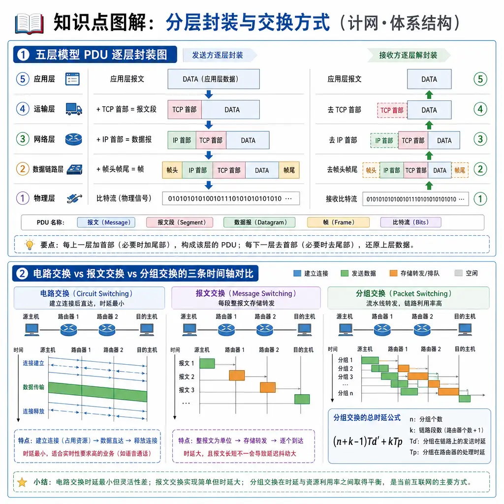
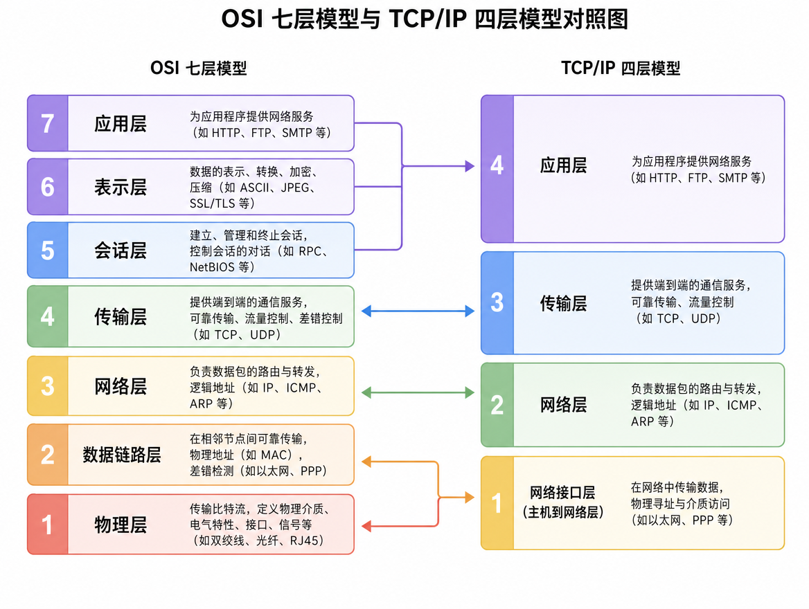
【分值占比】约 2~4 分
【考频】⭐⭐（低频）
【必背】
- 计算机网络的概念、组成、功能
- 计算机网络的分类：WAN、MAN、LAN、PAN
- 协议、接口、服务的概念
- ISO/OSI七层模型与TCP/IP四层模型的对比
- 各层功能及典型协议
- 电路交换、报文交换、分组交换对比及分组交换时延计算
- 性能指标：速率、带宽、吞吐量、时延、RTT、时延带宽积、利用率
【核心概念】
1.1 计算机网络概述
定义：将分散的、具有独立功能的计算机系统，通过通信设备和线路连接起来，由软件实现资源共享和信息传递的系统。
功能：数据通信、资源共享、分布式处理、提高可靠性、负载均衡。
组成： - 硬件：主机、通信设备（路由器、交换机）、传输介质 - 软件：网络操作系统、应用软件 - 协议：网络通信规则
1.2 计算机网络分类
| 分类标准 | 类型 |
|---|---|
| 范围 | PAN（个域网）、LAN（局域网）、MAN（城域网）、WAN（广域网） |
| 拓扑 | 总线、星形、环形、网状 |
| 传输技术 | 广播式、点对点 |
| 使用者 | 公用网、专用网 |
1.3 网络体系结构
协议三要素： - 语法：数据与控制信息的格式 - 语义：需要发出的控制信息及完成的动作 - 同步（时序）：事件实现顺序
OSI七层模型 vs TCP/IP四层模型：
| OSI七层 | TCP/IP四层 | 典型协议/设备 |
|---|---|---|
| 应用层 | 应用层 | HTTP、FTP、SMTP、DNS |
| 表示层 | 应用层（表示层功能并入应用层） | 加密、压缩 |
| 会话层 | 应用层（会话层功能并入应用层） | NetBIOS |
| 传输层 | 传输层 | TCP、UDP |
| 网络层 | 网际层（IP层） | IP、ICMP、ARP、OSPF、BGP |
| 数据链路层 | 网络接口层 | Ethernet、PPP、交换机 |
| 物理层 | 网络接口层（物理层功能并入网络接口层） | 集线器、中继器、网线 |
五层参考模型（教学用）： 应用层 → 传输层 → 网络层 → 数据链路层 → 物理层
各层数据传输单位： - 应用层：报文（Message） - 传输层：报文段（Segment）/ 用户数据报 - 网络层：数据报 / 分组（Packet） - 数据链路层：帧（Frame） - 物理层：比特（Bit）
PDU 逐层封装：$SDU + PCI = PDU$（服务数据单元 + 协议控制信息 = 协议数据单元）。本层的 PDU 即下一层的 SDU。
应用层报文 → [TCP/UDP首部 | 数据] 报文段 → [IP首部 | 数据] 数据报 → [帧头 | 数据 | 帧尾] 帧 → 比特流
💡 技巧：PDU 名称与层的对应是选择题高频点——"段、包（分组）、帧、比特"分别对应"传输、网络、链路、物理"。
1.4 数据交换方式
电路交换：通信前建立专用物理通路（建立连接 → 通信 → 释放连接），整个通信期间带宽被独占。时延小、数据直达，适合实时性要求高的大批量连续传输；但线路利用率低，不适合突发性数据。
报文交换：以完整报文为单位"存储-转发"，无需建立连接，动态选择路由，线路利用率高；但报文长度不限，结点缓存压力大、转发时延大。
分组交换：把报文划分成等长分组（首部+数据），逐段存储-转发。综合电路交换与报文交换的优点：时延较小、线路利用率高、可靠灵活，是计算机网络的主流方式。分数据报与虚电路两种服务。
| 交换方式 | 建立连接 | 转发方式 | 线路利用率 | 时延 | 适用场景 |
|---|---|---|---|---|---|
| 电路交换 | 必须 | 独占直达 | 低 | 最小（建立后仅传播时延） | 实时语音、大批量连续数据 |
| 报文交换 | 不需要 | 整报文存储-转发 | 高 | 大 | 电报等早期网络 |
| 分组交换 | 数据报不需要/虚电路需要 | 分组存储-转发 | 高 | 较小 | 现代计算机网络 |
多段链路时延推导（设 $k$ 段链路，每段传播时延 $T_p$，忽略处理时延）： - 报文交换：每段都要完整接收再转发，总时延 $= k \times (T_d + T_p)$，$T_d$ 为整个报文的发送时延。 - 分组交换（流水线）：$n$ 个分组，发送方发完全部分组需 $n \cdot T_d'$；最后一个分组再经 $k-1$ 段存储-转发需 $(k-1) \cdot T_d'$；加上各段传播时延 $k \cdot T_p$：
$$T_{总} = n \cdot T_d' + (k-1) \cdot T_d' + k \cdot T_p = (n+k-1) \cdot T_d' + k \cdot T_p$$
【例】主机 A 经 2 段链路（1 个中间结点）向 B 传送 $8\times10^{6}$ bit 报文，链路速率 10 Mb/s，每段传播时延 2 ms，忽略结点处理时延。 1. 报文交换：发送时延 $T_d = 8\times10^{6} / 10^{7} = 0.8$ s，总时延 $= 2\times(0.8 + 0.002) = 1.604$ s。 2. 分组交换：分为 1000 个分组，每组 8000 bit，$T_d' = 0.8$ ms。总时延 $= (1000 + 2 - 1)\times 0.8 + 2\times 2 = 804.8$ ms，约为报文交换的一半。
💡 技巧：分组交换采用流水线转发，中间结点不必等"全部报文到齐"即可转发；分组数越多时延优势越明显（极限约为 $nT_d' + $ 一段发送时延与传播时延）。
1.5 性能指标
速率（数据率/比特率）：单位时间传输的比特数，单位 bit/s。
带宽： - 模拟意义：信号具有的频带宽度，单位 Hz； - 数字意义（计网常用）：信道所能达到的最高数据率，单位 bit/s。
吞吐量：单位时间实际通过某网络（信道、接口）的数据量，是受带宽与负载限制的"实测值"，小于等于带宽。
时延：总时延 = 发送时延 + 传播时延 + 处理时延 + 排队时延。
$$T_{发送} = \frac{帧长(bit)}{发送速率(bit/s)}, \qquad T_{传播} = \frac{信道长度(m)}{电磁波速率(m/s)}$$
- 处理时延：结点检错、查路由表等花费的时间；
- 排队时延：分组在路由器队列中等待转发的时间。
往返时延 RTT：从发送方发出数据到收到接收方确认为止所经历的时间，$RTT \approx 2 \times T_{传播}$（一般不计发送时延）。
时延带宽积：
$$G = T_{传播} \times 带宽$$
单位为 bit，表示"以比特为单位的链路长度"——发送方发出的第一个比特到达对方时，链路上已容纳的比特数。
利用率： - 信道利用率 = 有数据通过的时间占比；网络利用率 = 全网信道利用率的加权平均。 - 利用率并非越高越好：$U \to 1$ 时时延急剧增大，$D = \dfrac{D_0}{1-U}$。
【例】信道带宽 1 Gb/s，端到端传播时延 10 ms，帧长 8000 bit。 1. 时延带宽积 $= 10\times10^{-3} \times 10^{9} = 10^{7}$ bit $= 1.25\times10^{6}$ B； 2. 发送时延 $= 8000 / 10^{9} = 8\ \mu s$；若采用停止-等待协议，信道利用率 $U = \dfrac{8\ \mu s}{8\ \mu s + 20\ ms} \approx 0.04\%$。
【易错警示】
- ⚠️ 路由器工作在网络层，交换机工作在数据链路层，集线器在物理层
- ⚠️ TCP/IP模型没有会话层和表示层，其功能由应用层实现
- ⚠️ 协议是水平的（对等层），服务是垂直的（上下层）
- ⚠️ 物理层传输的是比特流，不是帧
- ⚠️ 发送时延取决于帧长与发送速率，与距离无关；传播时延取决于信道长度与电磁波速率，与发送速率无关——高速链路只是"发送快"，不能让电磁波"跑得快"
- ⚠️ 分组交换时延推导中，只有最后一个分组要走完剩余 $k-1$ 段链路，不要给每个分组都乘 $k$
- ⚠️ 时延带宽积 = 传播时延 × 带宽，单位是 bit，不是 bit/s
🔑 口诀："发送看长度，传播看距离；时延带宽积，链上多少比特。"
【真题速查】
| 考点板块 | 高频考点归类 |
|---|---|
| 体系结构 | OSI 七层与 TCP/IP 四层对应关系、各层功能与典型协议 |
| 交换方式 | 三种交换方式对比、分组交换多段链路时延计算 |
| 性能指标 | 四种时延辨析、时延带宽积、信道利用率计算 |
逐题真题：先阅读上方知识点，再按年份展开下列原题；每道题均已对应本章节知识点。
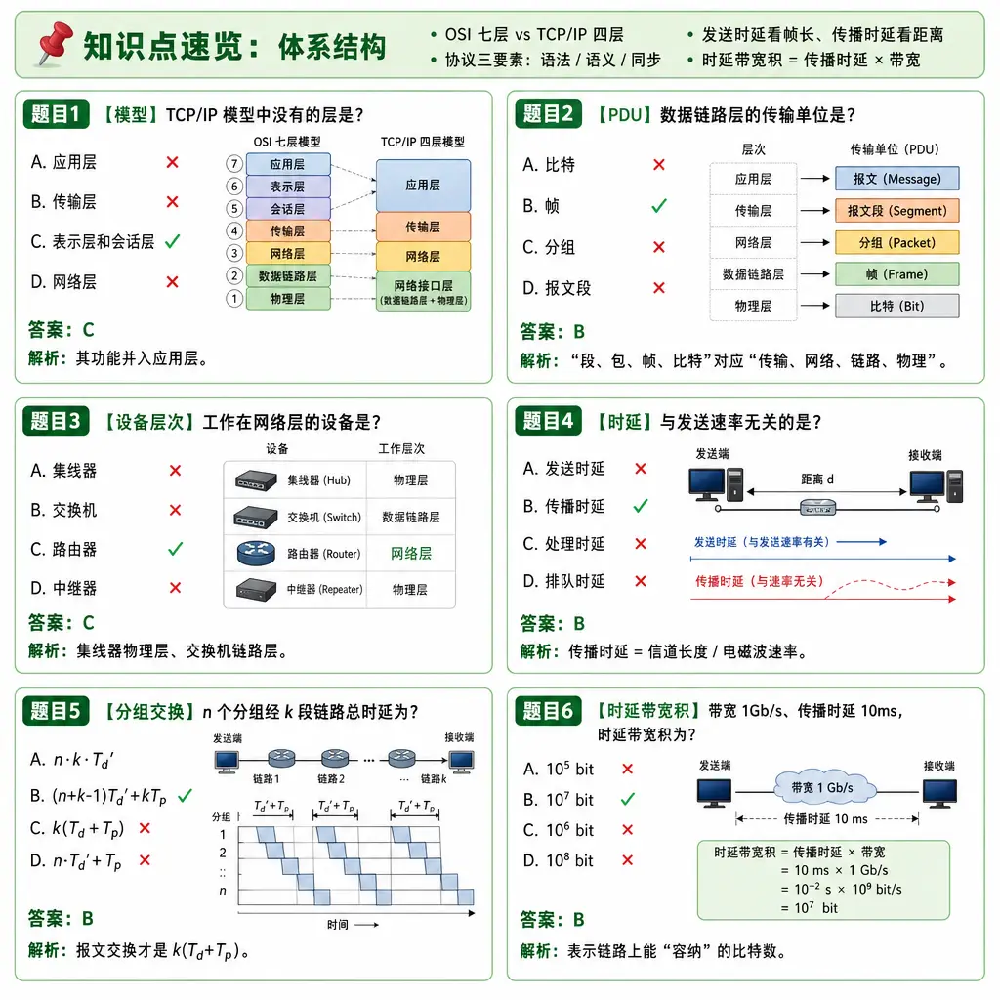
（考点归类供参考，具体题号以历年原卷为准）
第2章 物理层
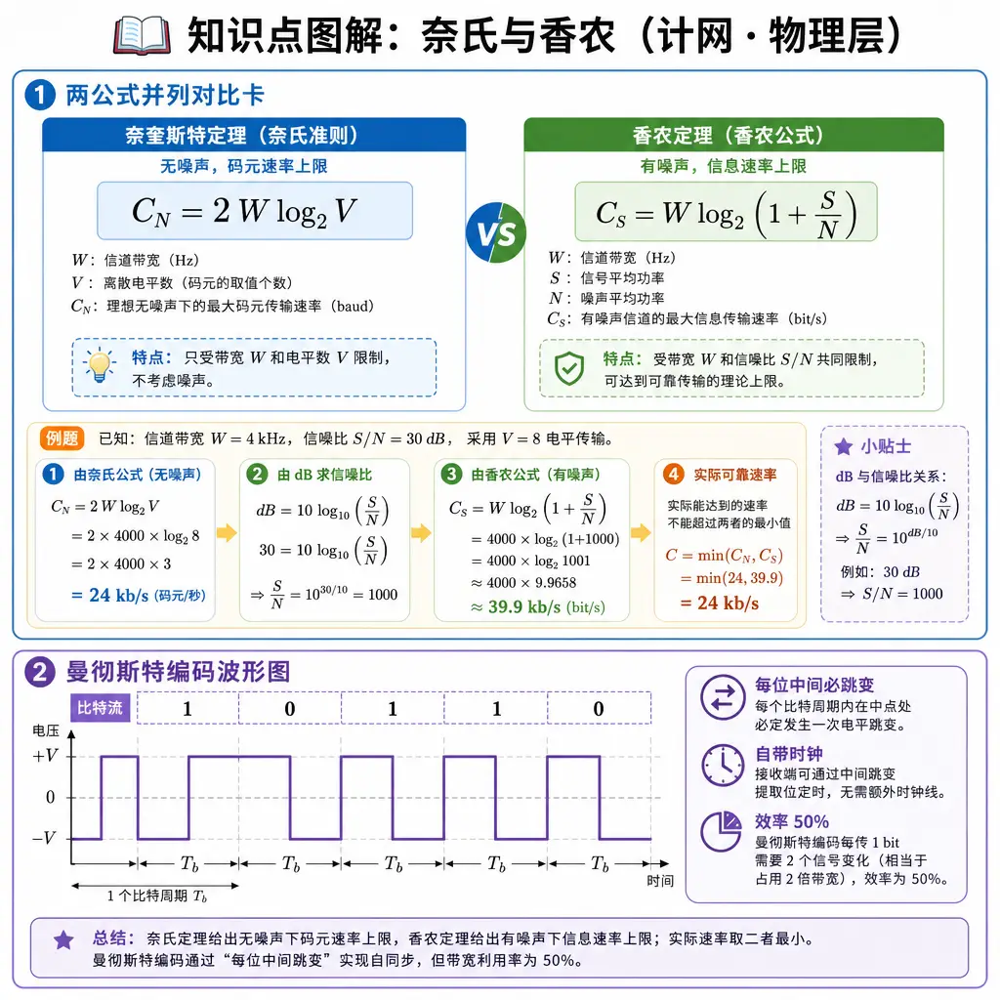
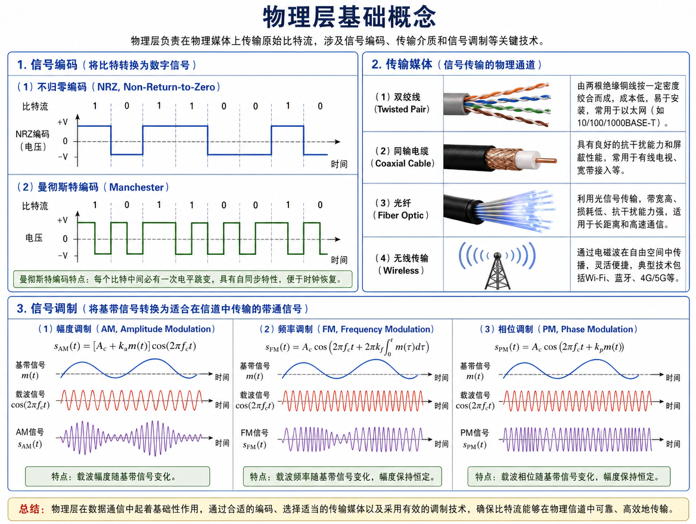
【分值占比】约 2~4 分
【考频】⭐（低频）
【必背】
- 码元、波特率与比特率的关系
- 奈奎斯特定理、香农定理
- 编码与调制：NRZ、曼彻斯特、差分曼彻斯特
- 传输介质：双绞线、同轴电缆、光纤、无线
- 物理层设备：中继器、集线器
【核心概念】
2.1 通信基础
信道：向某一方向传送信息的媒体。一条通信线路包含一条发送信道和一条接收信道。
通信方式： - 单工：单向通信（广播） - 半双工：双向交替（对讲机） - 全双工：双向同时（电话）
码元与波特率： - 码元：固定时长的信号波形（一个脉冲），是数字信号的计量单位；一个码元可携带 $\log_2 V$ 个比特（$V$ 为离散电平数）。 - 波特率（码元速率）：单位时间传输的码元数，单位波特（Baud）。 - 比特率与波特率的关系：
$$R_{比特} = R_{波特} \times \log_2 V$$
【例】某信道采用 4 相制（4 种相位，QPSK），波特率为 2400 Baud，则比特率 $= 2400 \times \log_2 4 = 4800$ bit/s；若改用 16 电平，同样波特率下比特率 $= 2400 \times \log_2 16 = 9600$ bit/s。
奈奎斯特定理（无噪声）： $$C_{max} = 2W \log_2 V \quad (bit/s)$$ 其中 $W$ 为带宽（Hz），$V$ 为离散电平数。
对于二进制：$C_{max} = 2W$
香农定理（有噪声）： $$C_{max} = W \log_2(1 + S/N) \quad (bit/s)$$
信噪比（dB）= $10 \log_{10}(S/N)$
奈氏与香农联合应用：实际信道极限数据率取两者的较小值——奈氏给出无噪声下的码元速率上限，香农给出有噪声下的信息速率上限。
【例】带宽 $W = 4$ kHz，信噪比 30 dB，最多 8 种电平。 1. 奈氏：$C = 2 \times 4000 \times \log_2 8 = 24$ kb/s； 2. 香农：30 dB $\Rightarrow S/N = 10^{30/10} = 1000$，$C = 4000 \times \log_2(1+1000) \approx 4000 \times 9.97 \approx 39.9$ kb/s； 3. 取较小值，极限数据率为 24 kb/s。
💡 技巧：dB 换算先算 $S/N = 10^{dB/10}$；记住 $\log_2 1000 \approx 9.97 \approx 10$ 可快速估算香农上限。
2.2 编码与调制
基带传输：数字信号直接在信道传输。
编码方式： | 编码 | 特点 | |------|------| | NRZ | 高电平1，低电平0，有直流分量 | | 曼彻斯特 | 每位中间跳变，上跳0下跳1（或相反）| | 差分曼彻斯特 | 位开始跳变0，不跳变1 |
频带传输：数字信号调制为模拟信号传输。
调制方式：ASK、FSK、PSK、QAM。
2.3 传输介质
| 介质 | 特点 | 应用 |
|---|---|---|
| 双绞线 | 便宜、易受干扰 | 以太网（100m） |
| 同轴电缆 | 抗干扰较好 | 有线电视 |
| 光纤 | 带宽大、衰减小、抗干扰、轻 | 主干网、长距离 |
| 无线电波 | 全向传播 | WiFi、广播 |
| 微波 | 直线传播 | 卫星通信 |
2.4 物理层设备
中继器：信号放大再生，延长传输距离，工作在物理层。
集线器（Hub）：多端口中继器，广播转发，工作在物理层，共享带宽。
【易错警示】
- ⚠️ 奈奎斯特定理和香农定理取较小值作为极限
- ⚠️ 曼彻斯特编码效率50%（每位2个电平），但自带时钟
- ⚠️ 集线器是共享设备，所有端口在同一冲突域和广播域
- ⚠️ 光纤利用全反射传光，不是电信号
- ⚠️ 波特率单位是 Baud（码元/秒），不等于比特率；只有二进制（$V=2$）时两者数值才相等
🔑 口诀："波特乘对数得比特，奈氏香农取小值。"
【真题速查】
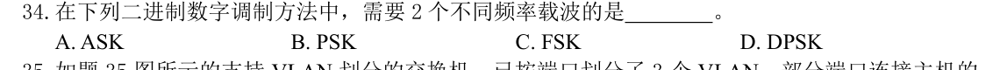
| 考点板块 | 高频考点归类 |
|---|---|
| 定理计算 | 奈奎斯特定理、香农定理计算及联合取小值 |
| 单位换算 | 波特率与比特率的换算 |
| 编码波形 | 曼彻斯特/差分曼彻斯特编码波形判断 |
| 介质与设备 | 传输介质与物理层设备特性辨析 |
逐题真题：先阅读上方知识点，再按年份展开下列原题；每道题均已对应本章节知识点。
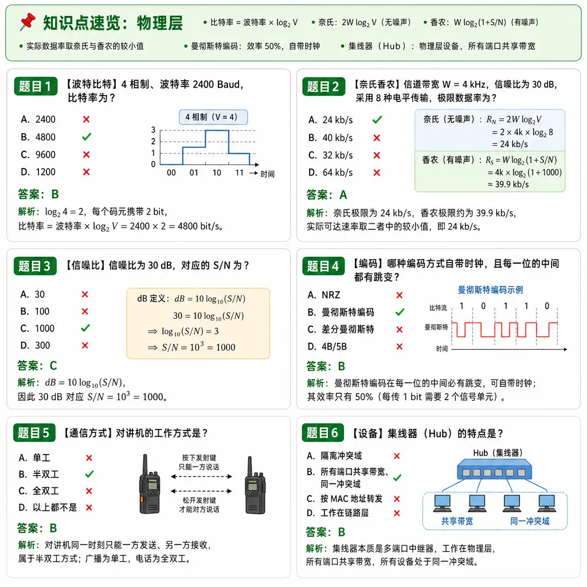
（考点归类供参考，具体题号以历年原卷为准）
第3章 数据链路层
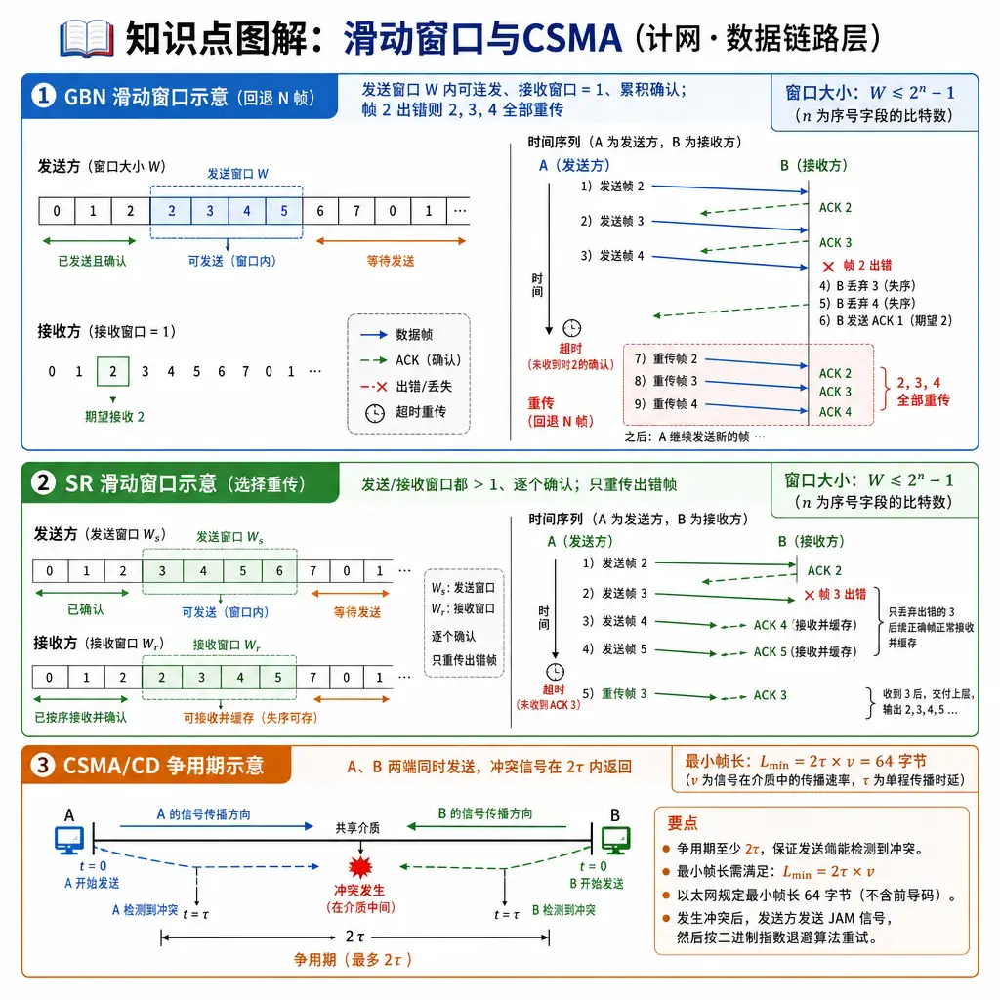
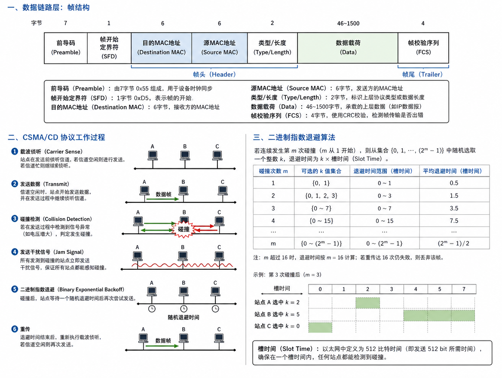
【分值占比】约 4~6 分
【考频】⭐⭐⭐（中等频率）
【必背】
- 数据链路层功能：封装成帧、透明传输、差错检测、可靠传输
- 组帧方法：字符计数、字符填充、零比特填充
- 差错控制：奇偶校验、海明码纠错、CRC循环冗余校验
- 可靠传输：停止-等待、GBN、SR协议及信道利用率计算
- 介质访问控制：ALOHA、CSMA、CSMA/CD、CSMA/CA；CDM/CDMA 码片正交计算
- 以太网帧格式、MAC地址、VLAN
- 广域网协议：PPP、HDLC；无线局域网 802.11
- 数据链路层设备：网桥、交换机
【核心概念】
3.1 数据链路层功能
封装成帧：将网络层数据报加首部和尾部形成帧。
透明传输：无论什么样的比特组合，都能在链路上传送。
差错检测：检测传输中的错误。
可靠传输：发送方确认接收方正确收到。
3.2 组帧方法
| 方法 | 原理 |
|---|---|
| 字符计数 | 帧首部指明帧内字符数 |
| 字符填充 | 首尾加FLAG（如SOH/EOT），数据中的FLAG前加ESC |
| 零比特填充 | 首尾加01111110，数据中出现连续5个1后插0 |
3.3 差错控制
奇偶校验： - 在数据后附加 1 位校验位，使"1"的个数为奇数（奇校验）或偶数（偶校验）。 - 只能检测出奇数位错误，无法定位错误位；海明距离为 2，只能检错不能纠错。
海明码（纠错编码）： - 在 $k$ 位数据中插入 $r$ 位校验位，构成 $k + r$ 位码字，要求：
$$2^{r} \geq k + r + 1$$
- 可纠正 1 位错（海明距离为 3）。一般地：检测 $d$ 位错需海明距离 $d + 1$，纠正 $d$ 位错需海明距离 $2d + 1$。
【例】欲传送 4 位数据并能纠正 1 位错：试 $r = 3$，$2^{3} = 8 \geq 4 + 3 + 1 = 8$，成立。故需 3 位校验位，共 7 位码字，即 (7,4) 海明码。
CRC循环冗余校验： 1. 数据后面加 $r$ 个0（$r$ 为生成多项式最高次） 2. 用模2除法除以生成多项式 3. 余数作为FCS（帧检验序列）附加在数据后 4. 接收方同样除法，余数为0则无错
⚠️ CRC 只能检错，不能纠错；其检错能力（如能否检出全部奇数位错、双比特错、突发错）取决于生成多项式的选取。
3.4 可靠传输
停止-等待协议： - 发送一帧，等待确认，再发下一帧 - 超时重传 - 需要1位序号（0和1交替） - 信道利用率低
GBN（回退N帧）协议： - 发送窗口 $>1$，接收窗口 $=1$ - 累积确认 - 超时重传所有已发送未确认的帧 - 窗口大小 $\leq 2^n - 1$（$n$ 为序号位数）
SR（选择重传）协议： - 发送窗口 $>1$，接收窗口 $>1$ - 非累积确认，逐个确认 - 只重传出错帧 - 窗口大小 $\leq 2^{n-1}$
| 协议 | 发送窗口 | 接收窗口 | 确认方式 | 重传 |
|---|---|---|---|---|
| 停止-等待 | 1 | 1 | 单个 | 1帧 |
| GBN | >1 | 1 | 累积 | N帧 |
| SR | >1 | >1 | 逐个 | 1帧 |
信道利用率（停止-等待）：
$$U = \frac{T_D}{T_D + RTT + T_A}$$
其中 $T_D$ 为数据帧发送时延，$T_A$ 为确认帧发送时延（常忽略），$RTT$ 为往返时延。
滑动窗口协议的利用率：设发送窗口为 $W_T$，一个周期 $T_D + RTT + T_A$ 内最多可连续发送 $W_T$ 帧：
$$U = \min\left(1,\ \frac{W_T \cdot T_D}{T_D + RTT + T_A}\right)$$
窗口与序号位数关系：GBN 发送窗口 $\leq 2^{n} - 1$；SR 发送窗口与接收窗口均 $\leq 2^{n-1}$。
【例】卫星信道 $RTT = 500$ ms，数据帧发送时延 $T_D = 20$ ms，忽略 $T_A$。 1. 停止-等待：$U = 20 / (20 + 500) \approx 3.8\%$。 2. 改用 GBN 并要求 $U = 100\%$：需 $W_T \cdot T_D \geq T_D + RTT$，即 $W_T \geq 520 / 20 = 26$；由 $2^{n} - 1 \geq 26$ 得 $n \geq 5$，故序号至少需要 5 位。
⚠️ 易错警示：GBN 中窗口若超过 $2^{n}-1$，超时重传后新旧帧序号可能混淆；SR 中窗口若超过 $2^{n-1}$，接收方无法区分新帧与重传帧。
3.5 介质访问控制
静态划分信道： - FDM（频分多路复用） - TDM（时分多路复用） - WDM（波分多路复用） - CDM（码分多路复用）
CDM / CDMA（码分多路复用）： - 每个站分配唯一的 $m$ bit 码片序列；发送 1 时发送自己的码片序列，发送 0 时发送其反码。 - 各站码片序列必须相互正交：设 $\mathbf{S}$、$\mathbf{T}$ 为两站码片向量，规格化内积
$$\mathbf{S} \cdot \mathbf{T} = \frac{1}{m}\sum_{i=1}^{m} S_i T_i = 0$$
且 $\mathbf{S} \cdot \mathbf{S} = 1$，$\mathbf{S} \cdot \mathbf{S}' = -1$（$\mathbf{S}'$ 为 $\mathbf{S}$ 的反码）。 - 接收方法：将收到的叠加信号与某站码片做规格化内积——结果为 1 则该站发了 1，为 −1 则发了 0，为 0 则该站未发送。
【例】A、B、C、D 四站码片序列分别为 A=(−1−1−1+1+1−1+1+1)，B=(−1−1+1−1+1+1+1−1)，C=(−1+1−1+1+1+1−1−1)，D=(−1+1−1−1−1−1+1−1)。收到叠加信号 (−1+1−3+1−1−3+1+1)，逐站求规格化内积（$m=8$）： 1. 与 A：$(1-1+3+1-1+3+1+1)/8 = 1$ → A 发了 1 2. 与 B：$(1-1-3-1-1-3+1-1)/8 = -1$ → B 发了 0 3. 与 C：$(1+1+3+1-1-3-1-1)/8 = 0$ → C 未发送 4. 与 D：$(1+1+3-1+1+3+1-1)/8 = 1$ → D 发了 1
随机访问介质访问控制：
ALOHA： - 纯ALOHA：想发就发，冲突率大 - 时隙ALOHA：只能在时隙开始发，最大吞吐量36.8%
CSMA（载波侦听多路访问）： - 1-坚持CSMA：信道空闲立即发，忙则持续侦听 - 非坚持CSMA：信道空闲立即发，忙则随机等待后再侦听 - p-坚持CSMA：时隙信道空闲则以概率p发送
CSMA/CD（带冲突检测）： - 边发边侦听，冲突则停止 - 二进制指数退避算法：第 $k$ 次冲突后从 ${0, 1, \dots, 2^{k}-1}$ 中随机选 $r$（$k$ 超过 10 后按 10 计），等待 $r \times 2\tau$；连续 16 次失败则上报 - 最小帧长：
$$L_{min} = 2\tau \times v$$
其中 $\tau$ 为单程传播时延，$v$ 为发送速率，确保帧还没发完冲突信号就能返回发送方。 - 争用期/冲突窗口 = $2\tau$（往返时延） - 适用于以太网（有线）
CSMA/CA（带冲突避免）： - 不能检测冲突，只能尽量避免 - RTS/CTS握手 - 用于WiFi（无线）
3.6 以太网
MAC地址：48位，前24位厂商标识，后24位设备标识。
以太网帧格式（V2）：
| 目的MAC(6B) | 源MAC(6B) | 类型(2B) | 数据(46~1500B) | FCS(4B) |
最小帧长64字节：确保冲突检测。
高速以太网：100BASE-T（100 Mb/s 双绞线星形）、吉比特以太网，均保持 64 字节最小帧长以兼容。
虚拟局域网 VLAN（IEEE 802.1Q）： - 在以太网帧源地址与类型字段之间插入 4 字节 VLAN 标签，其中含 12 位 VLAN ID（最多 4094 个可用 VLAN）。 - 作用：把一个物理 LAN 划分成多个逻辑广播域，抑制广播风暴、便于管理与安全隔离。 - 最常见按交换机端口划分；同一 VLAN 内可直接通信，跨 VLAN 通信须经路由器（三层转发）。
3.7 无线局域网（802.11）
- 基本服务集 BSS：若干无线站点 + 一个接入点 AP；多个 BSS 经分配系统 DS 互联成扩展服务集 ESS。
- MAC 层采用 CSMA/CA：发前侦听信道，空闲则等待 DIFS 后发送（或先经 RTS/CTS 预约信道），接收方回 ACK；冲突后随机退避。
- 隐蔽站问题：A、C 都能与 B 通信但彼此侦听不到对方，RTS/CTS 机制可缓解。
- 802.11 帧含 4 个地址字段（源地址、目的地址、发送 AP、接收 AP），与有线以太网帧格式不同；无线与有线互联需 AP 做帧格式转换。
3.8 广域网协议：PPP 与 HDLC
PPP（点对点协议）： - 三部分组成：① 将 IP 数据报封装到串行链路的方法（帧格式）；② 链路控制协议 LCP（建立、配置、测试数据链路）；③ 网络控制协议 NCP（支持多种网络层协议）。 - 透明传输：异步线路用字节填充（转义字符 0x7D）；同步线路用零比特填充（连续 5 个 1 后插 0）。 - 特点：简单（只检错不纠错）、面向字节、不使用序号与确认机制、全双工点对点，提供不可靠传输。
HDLC（高级数据链路控制）： - 面向比特，标志字段 01111110，采用零比特填充实现透明传输。 - 站类型：主站、从站、复合站；帧类型：信息帧 I、监督帧 S、无编号帧 U。 - 使用序号与确认机制，可实现可靠传输（与 PPP 的重要区别）。
⚠️ 易错警示：PPP 与 HDLC 都用零比特填充，但 PPP 是面向字节、无序号无确认，HDLC 是面向比特、有序号有确认，切勿混淆。
3.9 数据链路层设备
网桥：连接两个LAN，根据MAC地址转发，隔离冲突域。
交换机（多端口网桥）： - 根据MAC地址表转发 - 每个端口是一个冲突域 - 所有端口在一个广播域（划分 VLAN 后可隔离广播域） - 自学习建立MAC地址表
【易错警示】
- ⚠️ GBN接收窗口=1，SR接收窗口>1
- ⚠️ 以太网最小帧长64字节（不含前导码）
- ⚠️ 交换机隔离冲突域，不隔离广播域；路由器隔离广播域；VLAN 可使交换机划分广播域
- ⚠️ CSMA/CD用于有线，CSMA/CA用于无线
- ⚠️ CRC是检错码，不是纠错码；海明码才是纠错码
- ⚠️ 信道利用率计算要区分单工和双工
- ⚠️ CDMA 规格化内积结果只有三种含义：1 表示发了 1，−1 表示发了 0，0 表示该站未发送
🔑 口诀："GBN 累积退 N 帧，SR 逐个选重传；窗口上限 GBN 减一、SR 减半。"
【真题速查】
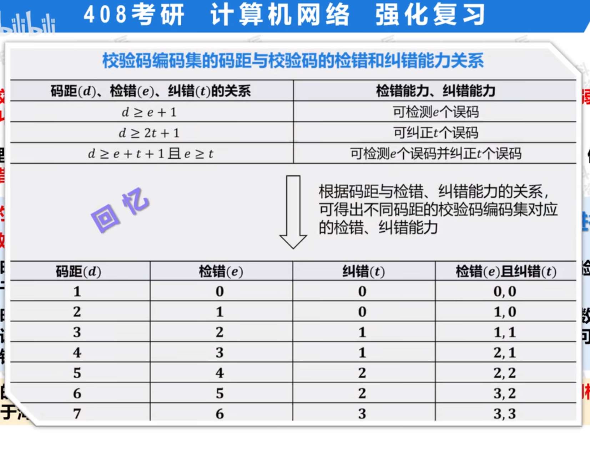
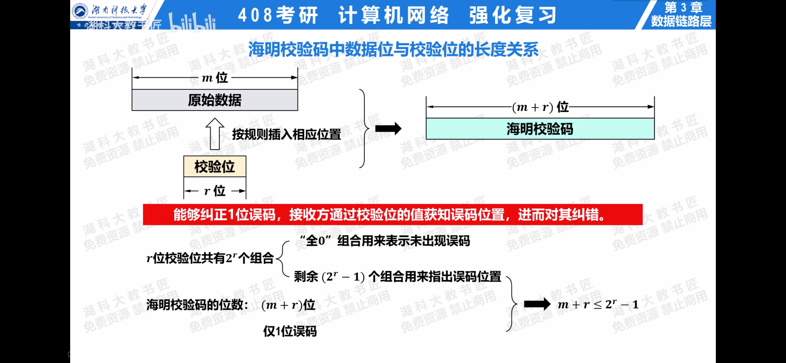
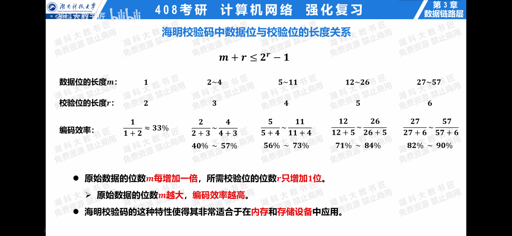
| 年份 | 题号 | 考点 |
|---|---|---|
| 2024 | 33, 34 | 交换机、CSMA/CD |
| 2023 | 33, 34 | GBN协议、CRC |
| 2022 | 33, 34 | SR协议、以太网帧 |
| 2021 | 33, 34 | 网桥、信道利用率 |
| 2020 | 33, 34 | 停止-等待、MAC地址 |
逐题真题：先阅读上方知识点，再按年份展开下列原题；每道题均已对应本章节知识点。
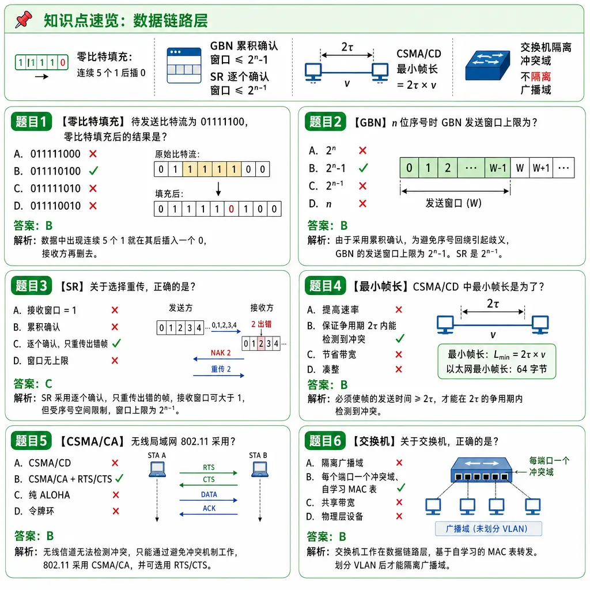
（考点归类供参考，具体题号以历年原卷为准）
第4章 网络层
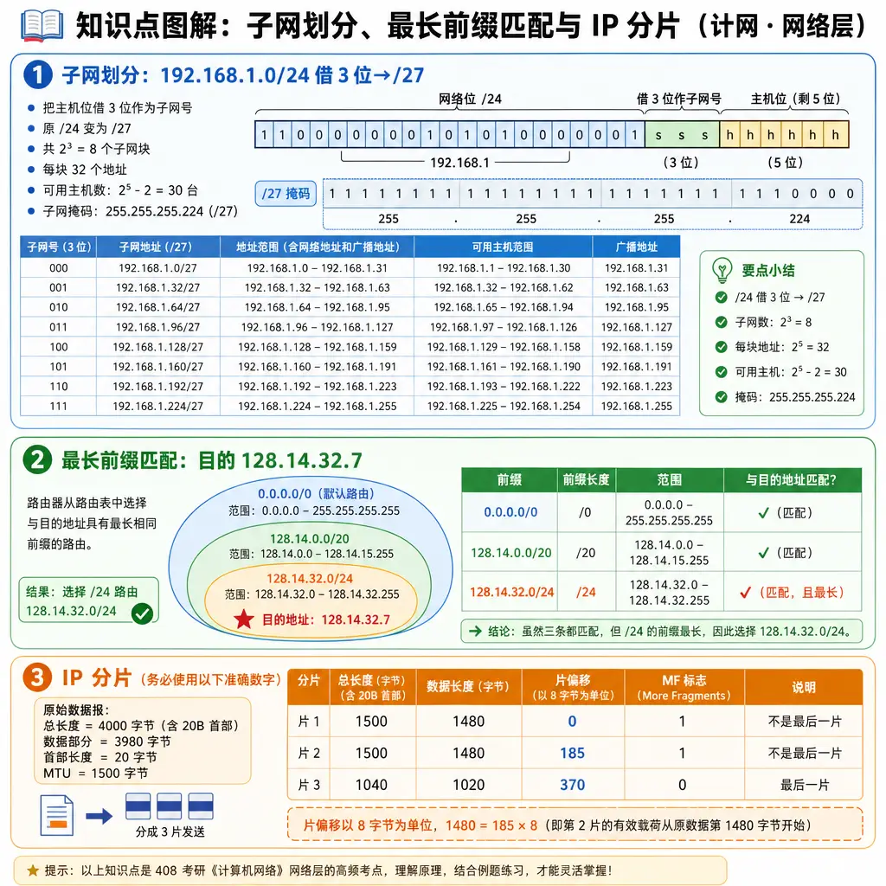
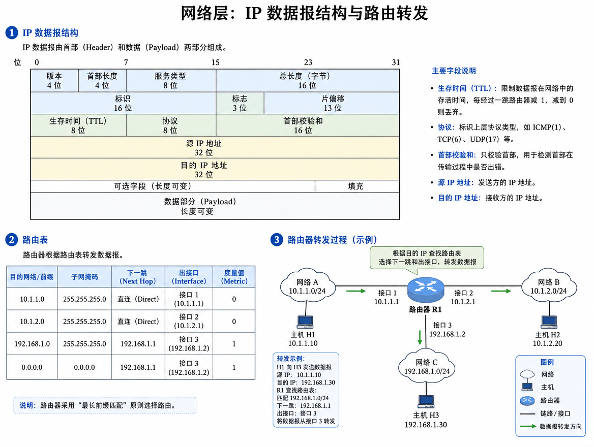
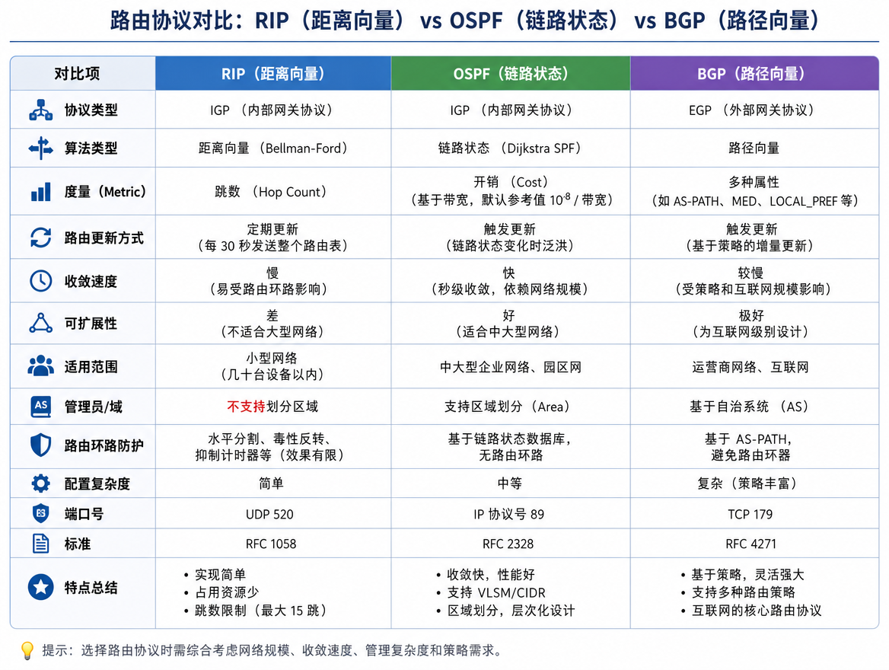
【分值占比】 约 6~10 分
【考频】 ⭐⭐⭐⭐⭐（最高频，大题常客，第 47 题大题常出本章）
【必背】 - 网络层功能：异构网络互联、路由选择、分组转发、拥塞控制 - IP数据报格式及分片 - IP地址分类：A、B、C、D、E类 - 子网划分、CIDR、VLSM - NAT：私有地址、地址转换 - ARP协议：IP地址→MAC地址 - DHCP、ICMP协议 - 路由算法：RIP、OSPF、BGP - 路由表与分组转发 - IP组播与移动IP - IPv6主要特点及过渡技术
【核心概念】
4.0 网络层的功能
异构网络互联：物理层、数据链路层协议各不相同的网络，通过路由器互相连接起来。IP 协议屏蔽了下层网络的差异，使这些性能各异的网络在网络层上看起来像一个统一的网络。
两大核心功能：
| 功能 | 所在层面 | 含义 |
|---|---|---|
| 路由选择 | 控制平面 | 运行路由算法，构造并维护路由表，决定分组走哪条路径 |
| 分组转发 | 数据平面 | 分组到达路由器时，按路由表把分组从合适的端口转发出去 |
网络层提供的两种服务：
| 对比项 | 虚电路服务 | 数据报服务 |
|---|---|---|
| 思路 | 可靠通信由网络保证 | 可靠通信由用户主机保证 |
| 连接建立 | 必须先建立虚电路 | 不需要，每个分组独立发送 |
| 地址 | 使用虚电路号（较短） | 每个分组带完整源、目的地址 |
| 路由选择 | 建立时定好，分组沿同一路径 | 每个分组独立选择路由 |
| 分组顺序 | 按发送顺序到达 | 不保证按序到达 |
| 可靠性 | 可由网络负责 | 由端系统（TCP）负责 |
| 结点故障 | 经过故障结点的虚电路均不能工作 | 只可能丢失少量分组，适应性强 |
⚠️ 易错警示：因特网（TCP/IP 体系）的网络层提供的是无连接的数据报服务，设计思路是"网络尽最大努力交付，可靠通信由运输层负责"。
拥塞控制： - 拥塞：某段时间内对网络资源的需求超过可用部分，导致网络性能变坏（吞吐量随负载增大反而下降）。 - 开环控制：在设计网络时事先把有关因素考虑周全，力求工作时不产生拥塞（预防手段）。 - 闭环控制：基于反馈环路——监测拥塞、把拥塞信息传递到可采取行动的地方、调整网络运行（动态调节）。
⚠️ 易错警示：拥塞控制是全局性过程（涉及所有主机、路由器）；流量控制是点对点的（发送方与接收方之间），不要混淆。
4.1 IP数据报
IPv4数据报格式（首部20字节固定 + 可选部分）：
| 版本(4) | 首部长度(4) | 区分服务(8) | 总长度(16) |
| 标识(16) | 标志(3) | 片偏移(13) |
| 生存时间TTL(8) | 协议(8) | 首部检验和(16) |
| 源IP地址(32) |
| 目的IP地址(32) |
| 选项（可选）|
| 数据 |
重要字段： - 总长度：首部+数据，最大65535字节 - 标识、标志、片偏移：用于分片和重组 - TTL：生存时间，每经过一台路由器减1，为0时丢弃 - 协议：上层协议（6=TCP, 17=UDP, 1=ICMP） - 首部检验和：只检验首部，不检验数据部分
🔑 三个长度字段的单位辨析（高频考点）：
| 字段 | 单位 | 说明 |
|---|---|---|
| 首部长度 | 4 字节 | 占 4 位，最小值 5（$5\times4=20$ 字节，无选项），最大值 15（$15\times4=60$ 字节） |
| 总长度 | 1 字节 | 占 16 位，首部＋数据总长，最大 $2^{16}-1=65535$ 字节 |
| 片偏移 | 8 字节 | 占 13 位，表示某片数据在原分组数据中的相对位置 |
🔑 口诀："首部长度除以 4，片偏移除以 8，总长度按字节算"。
首部检验和（二进制反码求和）： - 发送方：把首部分成若干个 16 位字，检验和字段先置 0，用反码算术把所有 16 位字相加（最高位产生的进位要回加到最低位），将结果取反填入检验和字段。 - 接收方：同样把首部各 16 位字反码相加，结果取反后应为 0（即相加结果为全 1），否则说明首部出错，丢弃该数据报。
【例】首部检验和计算：设某首部只有 3 个 16 位字（检验和字段置 0）： $w_1=$ 0100 0101 0000 0000（0x4500），$w_2=$ 0000 0000 0001 1100（0x001C），$w_3=$ 0000 0000 0000 0001（0x0001）。
解答要点：反码求和 $w_1+w_2+w_3=$ 0x451D；取反得 0xBAE2 填入检验和。接收方将 4 个字相加：0x451D + 0xBAE2 = 0xFFFF，取反为 0，判定首部未出错。
分片： - MTU（最大传送单元）：以太网1500字节 - 片偏移以8字节为单位 - 标志位：DF（禁止分片）、MF（更多分片）
💡 分片计算技巧：除最后一片外，每片数据部分长度必须是 8 的整数倍；求某片的片偏移 = 该片数据起始字节序号 ÷ 8。
4.2 IP地址
分类编址：
| 类别 | 范围 | 网络号 | 主机号 | 默认掩码 |
|---|---|---|---|---|
| A | 1.0.0.0~126.255.255.255 | 8位 | 24位 | 255.0.0.0 |
| B | 128.0.0.0~191.255.255.255 | 16位 | 16位 | 255.255.0.0 |
| C | 192.0.0.0~223.255.255.255 | 24位 | 8位 | 255.255.255.0 |
| D | 224.0.0.0~239.255.255.255 | 组播地址 | ||
| E | 240.0.0.0~255.255.255.255 | 保留 |
⚠️ 易错警示：表中网络号的"8/16/24 位"包含类别固定前导位（A 类以 0 开头、B 类以 10 开头、C 类以 110 开头），故可指派的网络号字段实际只有 7/14/21 位；A 类还要扣除全 0 和 127（回环）两个特殊网络。
特殊地址： - 网络地址：主机号全0 - 广播地址：主机号全1 - 回环地址：127.x.x.x - 私有地址： - A类：10.0.0.0~10.255.255.255 - B类：172.16.0.0~172.31.255.255 - C类：192.168.0.0~192.168.255.255
4.3 子网划分与CIDR
子网划分：从主机号借位作为子网号。
子网掩码：网络号+子网号全1，主机号全0。
CIDR（无分类域间路由选择）： - 消除传统分类，使用"网络前缀/前缀长度" - 如：192.168.1.0/24 - 支持路由聚合（构成超网），减少路由表项
常用计算结论： - 主机号占 $n$ 位 → 可指派主机数 $2^n - 2$（扣除全 0 网络地址与全 1 广播地址） - 从主机号借 $k$ 位作子网号 → 可划分 $2^k$ 个子网（现行教材允许使用全 0、全 1 子网） - 已知 IP 与掩码：网络地址 = IP $\land$ 掩码；广播地址 = 网络地址的主机位全部置 1
【例1】子网数与可用主机数：某单位获得 C 类网络 192.168.1.0/24，需划分出至少 6 个子网，每个子网主机数尽可能多。求子网掩码、每个子网的可用主机数。
解答要点：至少 6 个子网 → 借位 $k$ 满足 $2^k \geq 6$，取 $k=3$（得 8 个子网）；主机号剩 $8-3=5$ 位。子网掩码为 /27 即 255.255.255.224；每个子网可用主机数 $2^5-2=\mathbf{30}$ 台。
【例2】求网络地址与广播地址：主机 IP 为 128.14.33.37，子网掩码 255.255.240.0（/20）。求所在网络地址、广播地址和可用主机范围。
解答要点：第 3 字节 $33 \land 240 = 32$，网络地址 128.14.32.0/20；主机位 12 位，广播地址 128.14.47.255；可用主机范围 128.14.32.1~128.14.47.254，共 $2^{12}-2=4094$ 台。
【例3】路由聚合（构成超网）：路由表中有 4 个地址块 128.14.32.0/24、128.14.33.0/24、128.14.34.0/24、128.14.35.0/24，可聚合成一个表项吗？
解答要点：4 个地址第 3 字节分别为 001000 00、001000 01、001000 10、001000 11，前 22 位完全相同，故可聚合为 128.14.32.0/22。
最长前缀匹配：使用 CIDR 时，一个目的地址可能与路由表中多个表项匹配，此时选择网络前缀最长（掩码最长）的表项作为下一跳（前缀越长，地址块越小，路由越具体）。
VLSM（可变长子网掩码）： - 同一网络内使用不同子网掩码，提高IP地址利用率 - 分配步骤： 1. 把各部门/网段按所需主机数从大到小排序 2. 对每个需求求最小主机号位数 $m$，使 $2^m - 2 \geq$ 所需主机数 3. 从未分配地址空间中按顺序切出 /$(32-m)$ 大小的块，保证块按边界对齐 4. 剩余空间留作备用
【例4】VLSM 分配：将 192.168.1.0/24 分配给三个部门，主机数分别为 100、60、25。
解答要点：100 台需 $m=7$（$2^7-2=126$）→ 分 192.168.1.0/25（.0~.127）；60 台需 $m=6$（$2^6-2=62$）→ 分 192.168.1.128/26（.128~.191）；25 台需 $m=5$（$2^5-2=30$）→ 分 192.168.1.192/27（.192~.223）；剩余 192.168.1.224/27 备用。
🔑 口诀："需求从大到小排，块按 2 的幂对齐切"。
4.4 NAT（网络地址转换）
作用：私有IP ↔ 公网IP转换，节省IP地址。
类型： - 静态NAT：一对一固定映射 - 动态NAT：从地址池动态分配 - NAPT/PAT（端口地址转换）：多对一，通过端口号区分
4.5 重要协议
ARP（地址解析协议）： - IP地址 → MAC地址 - 广播请求，单播响应 - ARP缓存（生存时间通常20分钟）
RARP：MAC地址 → IP地址（已淘汰）
DHCP（动态主机配置协议）： - 自动分配IP地址 - 工作过程：Discover → Offer → Request → Acknowledge - 使用UDP，客户端端口68，服务器端口67
ICMP（网际控制报文协议）： - 封装在IP数据报中（协议字段=1） - 差错报告报文 4 种：终点不可达、时间超过、参数问题、改变路由（重定向） - 查询报文：回送请求/回答（Ping）、时间戳请求/回答
⚠️ 易错警示：ICMP 报文有"差错报告"与"查询"两大类，差错报告的标准术语是终点不可达、时间超过、参数问题、改变路由（重定向）；"超时"的规范说法是"时间超过"。
4.6 路由算法与协议
静态路由：人工配置，适合小规模网络。
动态路由：自动适应网络变化。
距离-向量路由算法（RIP）： - 基于Bellman-Ford - metric = 跳数，最大15跳（16表示不可达） - 和谁交换：仅和相邻路由器交换；交换什么：自己的整个路由表；何时交换：按固定时间间隔（每 30 秒） - 慢收敛，可能出现计数到无穷大问题（"坏消息传得慢"） - 使用UDP端口520
链路状态路由算法（OSPF）： - 基于Dijkstra最短路径 - 每台路由器维护全网拓扑图（链路状态数据库） - 只在链路状态变化时，用洪泛法向本自治系统内所有路由器发送更新 - 划分区域：一个主干区域（标识为 0.0.0.0）和若干非主干区域，非主干区域必须与主干区域相连，以限制洪泛范围、减少路由计算开销 - 收敛快，无计数到无穷大 - 使用IP协议89
BGP（边界网关协议）： - 自治系统（AS）间的路由协议 - 路径向量协议 - 每个 AS 选出边界路由器充当 BGP 发言人，代表整个 AS 与其他 AS 交换路由信息 - eBGP：不同 AS 的 BGP 发言人之间建立的连接；iBGP：同一 AS 内部的 BGP 会话，用于把外部学到的路由传遍本 AS - 使用TCP端口179
💡 记忆技巧：RIP 靠"道听途说"（相邻、整表、定期）；OSPF 靠"全局地图"（洪泛、增量）；BGP 靠"外交官"（发言人、TCP 可靠交换）。
4.7 路由表与分组转发
路由器的组成： - 路由选择部分（控制层面）：路由选择处理机，运行路由协议，构造并维护路由表 - 分组转发部分（数据层面）： - 输入端口：物理层接收比特流 → 数据链路层处理 → 查找路由表 → 经交换结构送往输出端口 - 交换结构：把分组从输入端口交换到合适的输出端口，实现方式有通过存储器、通过总线、通过纵横式互连网络三种 - 输出端口：把分组放入队列缓存 → 数据链路层封装 → 物理层发送
⚠️ 易错警示：输入/输出端口的队列溢出都会引起丢包；分组在路由器中排队是产生时延的重要原因。
直接交付与间接交付： - 目的主机与发送方在同一网络 → 直接交付：用 ARP 解析目的主机的 MAC 地址直接发送 - 不同网络 → 间接交付：先发给本网络的路由器（默认网关），由路由器逐跳转发
路由表内容：目的网络、子网掩码、下一跳、接口。
默认路由：表项 0.0.0.0/0，掩码全 0，与任何目的地址都匹配（前缀长 0），在所有具体表项均不匹配时使用，可大幅减小路由表规模。
转发过程： 1. 提取目的IP地址 2. 与路由表各条目逐行匹配（目的IP & 掩码 == 目的网络） 3. 多条匹配时选择最长前缀匹配 4. 转发到相应接口；若都不匹配则走默认路由 0.0.0.0/0，仍无则丢弃并报 ICMP 终点不可达
【例】最长前缀匹配：路由表如下，目的地址为 128.14.32.7，应从哪个表项转发？
| 目的网络 | 掩码 | 下一跳 |
|---|---|---|
| 0.0.0.0 | 0.0.0.0（/0，默认路由） | R1 |
| 128.14.32.0 | 255.255.240.0（/20） | R2 |
| 128.14.32.0 | 255.255.255.0（/24） | R3 |
解答要点：128.14.32.7 与三个表项都匹配（/20 覆盖 128.14.32.0~128.14.47.255，/24 覆盖 128.14.32.0~128.14.32.255），按最长前缀匹配选 /24，下一跳为 R3。
4.8 IPv6
主要变化： - 地址长度128位（IPv4是32位） - 首部固定40字节，取消检验和 - 支持即插即用（自动配置） - 冒号十六进制表示，如 2001:0DB8:0000:0000:0000:FF00:0042:8329 - 零压缩：::只能出现一次
IPv6地址类型：单播、组播、任播（取消广播）
IPv4 向 IPv6 过渡技术： - 双协议栈：主机/路由器同时运行 IPv4 与 IPv6 两个协议栈；与 IPv4 主机通信用 IPv4，与 IPv6 主机通信用 IPv6（由 DNS 返回的地址类型决定） - 隧道技术：IPv6 数据报要穿越 IPv4 网络时，把整个 IPv6 数据报封装成 IPv4 数据报的数据部分；离开 IPv4 网络时再解封还原为 IPv6 数据报继续传输
4.9 IP组播
组播概念：一对多通信。源主机只发送一份数据报，组播路由器在分叉处复制并转发给组内多个成员，比多次单播节省网络资源。
组播地址：使用 D 类地址 224.0.0.0~239.255.255.255，只能作目的地址。
D 类地址 → 组播 MAC 映射：以太网组播 MAC 地址以 01-00-5E 开头（高 25 位固定），取 D 类地址的低 23 位填入 MAC 地址的低 23 位。由于 D 类地址中组标识有 28 位，仅低 23 位参与映射，故 32 个不同的组播 IP 会映射到同一 MAC 地址，接收端需靠 IP 层软件进一步过滤。
【例】组播 MAC：D 类地址 226.0.9.26 对应的以太网组播 MAC 地址？
解答要点：取低 23 位 0x00091A，拼上固定前缀得 01-00-5E-00-09-1A。
IGMP（网际组管理协议）：主机与其直接相连的本地组播路由器之间使用，让路由器知道本网络上哪些主机加入/退出了某个组播组。主机加入组时主动发送 IGMP 报告；组播路由器周期性地探询组成员是否仍在组内。
组播路由选择：组播路由协议（如基于源基准树或组共享树）为每个组播组构造组播转发树，分组沿树形结构转发，既覆盖全部组员又避免环路；转发时常结合逆向路径转发（RPF）思想抑制重复。
4.10 移动IP
基本概念： - 移动结点：在移动中保持原 IP 地址（归属地址）不变、可持续通信的主机 - 归属网络与归属代理：移动结点的"家乡"网络及其上的代理，保存移动结点的当前位置信息 - 外地网络与外地代理：移动结点当前访问的网络及其代理 - 转交地址：移动结点在外地网络获得的临时地址（通常由外地代理分配）
通信过程： 1. 移动结点到达外地网络后获得转交地址，并向归属代理注册该转交地址 2. 通信对端按归属地址向移动结点发送数据报，被归属代理截获 3. 归属代理把原数据报封装（隧道）在新的 IP 数据报中，转发到转交地址 4. 外地代理解封并交付给移动结点
⚠️ 易错警示：移动结点发回通信对端的分组可直接路由（不必绕回归属代理），因此往返路径可能不一致（三角形路由）。
隧道转发：归属代理利用 IP-in-IP 封装构建隧道，是移动 IP 转发数据的核心机制。
【易错警示】
- ⚠️ 片偏移以8字节为单位，不是字节
- ⚠️ IP数据报分片可在源主机或路由器进行，重组只在目的主机进行
- ⚠️ TTL是跳数限制，不是时间
- ⚠️ 首部长度单位 4 字节、总长度单位 1 字节、片偏移单位 8 字节，三者常混考
- ⚠️ 首部检验和只检验首部，数据部分不检
- ⚠️ CIDR路由选择用最长前缀匹配；默认路由 0.0.0.0/0 前缀最短、最后匹配
- ⚠️ RIP用UDP，OSPF用IP，BGP用TCP
- ⚠️ 主机号全0和全1不能分配给主机；A/B/C 类网络号位数含固定前导位 0/10/110
- ⚠️ NAT转换只发生在边界路由器
- ⚠️ ARP不是安全协议，ARP欺骗是常见攻击
- ⚠️ ICMP 差错报告报文 4 种：终点不可达、时间超过、参数问题、改变路由（重定向）
- ⚠️ D 类地址只能作目的地址；组播 MAC 高 25 位固定为 01-00-5E（后接 0），仅映射 IP 低 23 位
- ⚠️ 因特网网络层提供无连接的数据报服务，不保证可靠交付
【真题速查】
| 年份 | 题号 | 考点 |
|---|---|---|
| 2024 | 35, 36, 47 | 子网划分、路由聚合、网络层大题 |
| 2023 | 35, 36, 47 | IP分片、NAT、网络层大题 |
| 2022 | 35, 36, 47 | CIDR、路由表、网络层大题 |
| 2021 | 35, 36, 47 | IP地址、OSPF、网络层大题 |
| 2020 | 35, 36, 47 | 子网划分、BGP、网络层大题 |
| 2019 | 35, 36, 47 | RIP、路由转发、网络层大题 |
逐题真题：先阅读上方知识点，再按年份展开下列原题；每道题均已对应本章节知识点。
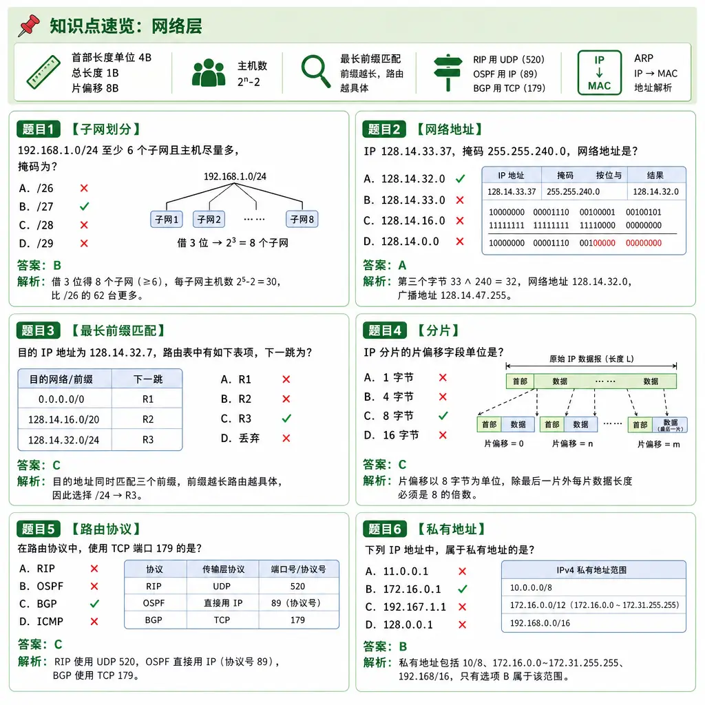
（考点归类供参考，具体题号以历年原卷为准）
第5章 传输层
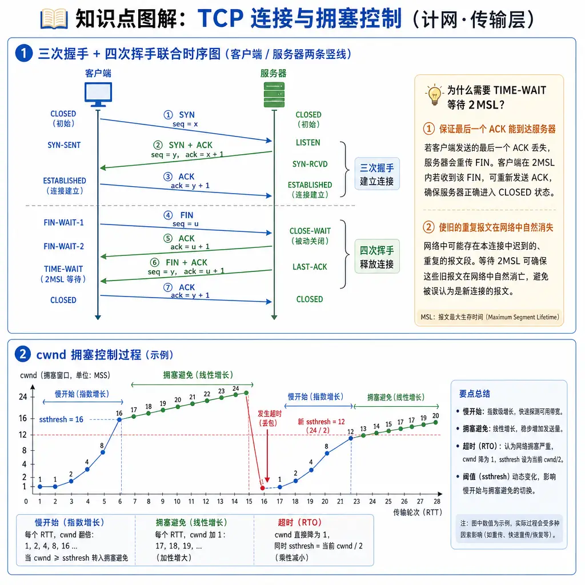
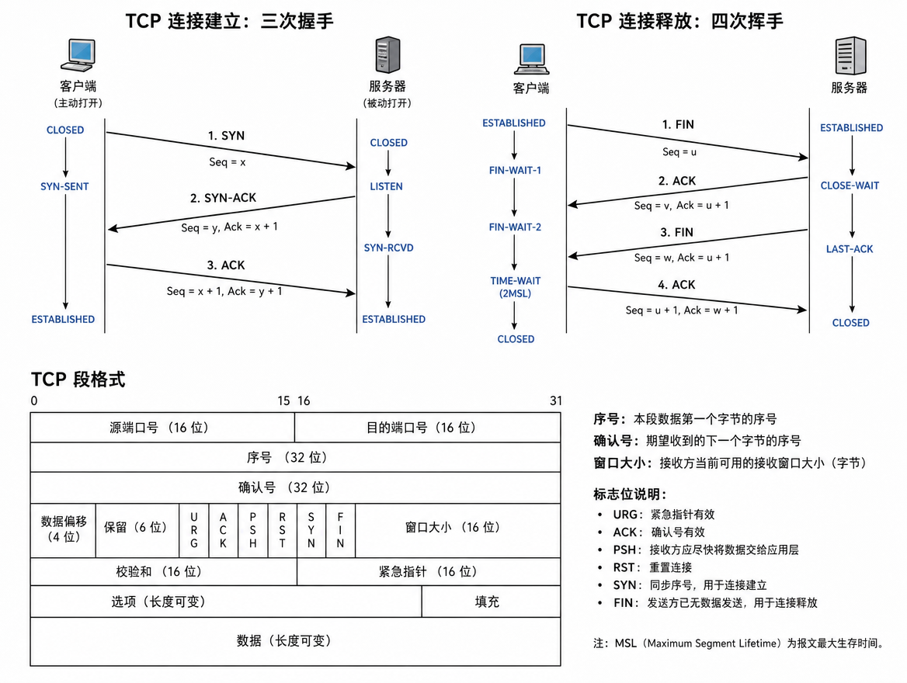
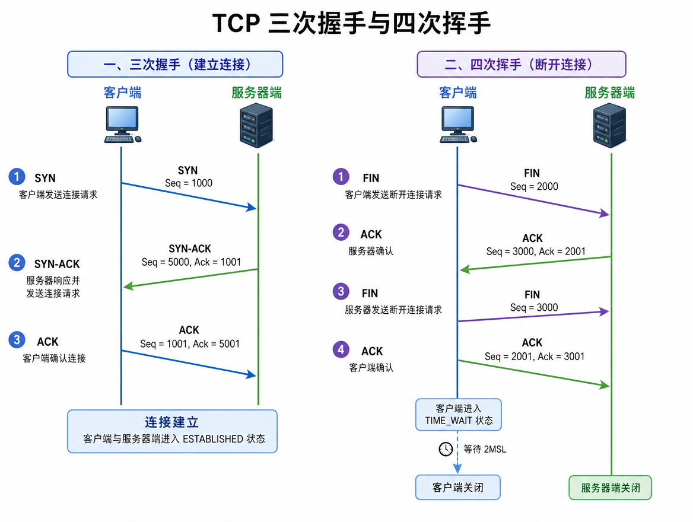
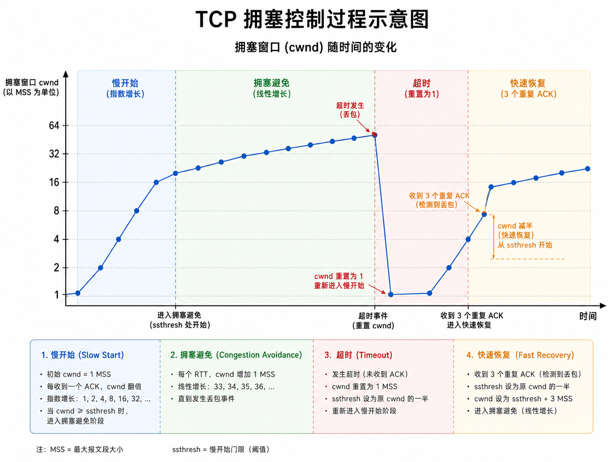
【分值占比】约 4~8 分
【考频】⭐⭐⭐⭐（高频，大题常客）
【必背】
- 传输层功能：端到端通信、复用与分用
- UDP特点：无连接、不可靠、面向报文、首部8字节
- TCP特点：面向连接、可靠、面向字节流、首部20字节
- TCP连接管理：三次握手、四次挥手
- TCP可靠传输：序号、确认、重传
- TCP流量控制：滑动窗口、拥塞窗口
- TCP拥塞控制：慢开始、拥塞避免、快重传、快恢复
- 端口号的分类与常见端口号
【核心概念】
5.1 传输层概述
功能： - 端到端通信（进程到进程） - 复用：多个应用进程共用传输层 - 分用：传输层将数据分发给正确进程 - 差错检测
端口：标识应用进程，16位。 - 熟知端口：0~1023（HTTP 80, HTTPS 443, FTP 21, SSH 22, DNS 53, SMTP 25） - 登记端口：1024~49151 - 动态/私有端口：49152~65535
🔑 口诀：「熟知不过千（0~1023），登记到四九一五一，剩下全是动态口」。
5.2 UDP
特点： - 无连接 - 尽最大努力交付（不可靠） - 面向报文 - 无拥塞控制 - 首部开销小（8字节） - 支持一对一、一对多、多对一、多对多
UDP首部：
| 源端口(16) | 目的端口(16) |
| 长度(16) | 检验和(16) |
UDP 检验和的计算（发送端）：
UDP 计算检验和时要临时附加一个 12 字节的伪首部，伪首部只在计算时存在，不向下传送：
| 源IP地址(32) |
| 目的IP地址(32) |
| 全0(8) | 协议号=17(8) | UDP长度(16) |
算法步骤：
- 把「伪首部 + UDP首部 + 数据」按 16 位 为一组分组（数据部分若为奇数字节，末尾补一个全 0 字节，补齐仅用于计算、不发送）；
- 检验和字段先置全 0；
- 将所有 16 位字做 二进制反码求和（即算术相加，最高位产生的进位要 回卷 加到最低位）；
- 将求和结果 按位取反，写入检验和字段。
接收端用同样方式把「伪首部 + 首部 + 数据（含检验和字段）」反码求和，若结果全为 1 则无差错，否则丢弃。
【例】（检验和计算）设待校验的三个 16 位字为：
0110011001100000
0101010101010101
1000111100001100
- 前两个字相加：
0110011001100000 + 0101010101010101 = 1011101110110101 - 再加第三个字：
1011101110110101 + 1000111100001100 = 1 0100101011000001（最高位产生进位） - 回卷：
0100101011000001 + 1 = 0100101011000010 - 按位取反得检验和：
1011010100111101
⚠️ 易错警示：反码求和的进位必须回卷到最低位；接收端「和全 1」才表示正确，不是「和全 0」。
💡 技巧：UDP 检验和字段为全 0 表示「不计算检验和」（IPv4 下可选）；TCP 的检验和是必需的，且伪首部协议号为 6。
适用场景：DNS、视频流、实时通信、SNMP。
5.3 TCP
特点： - 面向连接 - 可靠传输 - 面向字节流 - 全双工通信 - 点对点（一对一）
TCP首部（20字节固定）：
| 源端口(16) | 目的端口(16) |
| 序号(32) |
| 确认号(32) |
| 数据偏移(4) | 保留(6) | 标志位(6) | 窗口(16) |
| 检验和(16) | 紧急指针(16) |
| 选项（可选）|
重要字段： - 序号：本报文段发送数据的第一个字节序号 - 确认号：期望收到的下一个字节的序号（累积确认） - ACK：确认标志 - SYN：同步标志，建立连接 - FIN：终止标志，释放连接 - 窗口：接收窗口大小，用于流量控制
5.4 TCP连接管理
三次握手（建立连接）：
客户端 服务器
| SYN=1, seq=x |
|---------------------->|
| SYN=1, ACK=1, |
| seq=y, ack=x+1 |
|<----------------------|
| ACK=1, seq=x+1, |
| ack=y+1 |
|---------------------->|
为什么是三次而不是两次？（两层原因，答题要写全）
- 防止已失效的历史连接请求突然又传到服务器，造成错误连接与资源浪费：若客户端第一个 SYN 因拥塞滞留，客户端超时重发并完成通信后，旧 SYN 才到达服务器；两次握手下服务器会误认为新连接已建立并白白等待，三次握手中客户端不会对该旧 SYN 的确认再确认，服务器收不到第三次握手即释放。
- 使双方互相确认对方的发送与接收能力：第一次握手后服务器知道「客户端能发、自己能收」；第二次握手后客户端知道「双方收发都正常」；第三次握手后服务器才知道「客户端能收、自己能发」。三次是双方收发能力均被确认的最少次数。
四次挥手（释放连接）：
客户端 服务器
| FIN=1, seq=u |
|---------------------->|
| ACK=1, seq=v, |
| ack=u+1 |
|<----------------------|
| (服务器继续发送) |
| FIN=1, ACK=1, |
| seq=w, ack=u+1 |
|<----------------------|
| ACK=1, seq=u+1, |
| ack=w+1 |
|---------------------->|
| (等待2MSL后关闭) |
为什么等待 2MSL？（两个原因缺一不可）
- 保证最后一个 ACK 能到达对方：若该 ACK 丢失，服务器会超时重发 FIN，客户端在 2MSL 内还能收到并重发 ACK；若不等待直接关闭，重传的 FIN 无人应答，服务器无法正常关闭。
- 使本连接持续时间内产生的所有报文段都从网络中消失：经过 2MSL（两倍最长报文段寿命）后，旧连接的报文全部失效，不会出现在下一次新连接中造成干扰。
【例】（序号与确认号计算，难度★★）主机 A 向 B 连续发送两个 TCP 报文段：第一个报文段 seq = 70，携带 100 字节数据；第二个报文段 seq = 170，携带 80 字节数据。
- B 正确收到第一个报文段后，回复的确认号 ack = 70 + 100 = 170；
- B 正确收到第二个报文段后，回复的确认号 ack = 170 + 80 = 250；
- 若第一个报文段丢失、仅收到第二个报文段，由于 TCP 采用 累积确认，B 只能回复 ack = 70（期望收到的下一个字节），不能确认 170。
💡 技巧：记住「确认号 = 期望收到的下一个字节序号 = 已按序收到的最大字节序号 + 1」；SYN 和 FIN 即使不携带数据也各消耗 1 个序号。
5.5 TCP可靠传输
机制： - 序号：每个字节编号 - 确认：累积确认 - 重传：超时重传 + 快速重传
超时重传时间（RTO）的完整计算：
每测得一个新的 RTT 样本，按加权递推更新平滑 RTT 与 RTT 偏差：
$$\text{RTT}S = (1-\alpha)\times \text{RTT}_S + \alpha\times \text{RTT}{\text{样本}},\quad \alpha=\tfrac{1}{8}$$
$$\text{RTT}D = (1-\beta)\times \text{RTT}_D + \beta\times |\text{RTT}_S - \text{RTT}{\text{样本}}|,\quad \beta=\tfrac{1}{4}$$
$$\text{RTO} = \text{RTT}_S + 4\times \text{RTT}_D$$
初始值：第一次测量时 RTT_S 取该样本值，RTT_D 取样本值的一半。
Karn 算法：计算 RTT 样本时，重传的报文段不计入样本（因为无法区分 ACK 是对原报文还是重传报文的确认）；若报文段重传，则将 RTO 加倍（退避），直到不再重传为止再恢复用上面的公式更新。
【例】（RTO 计算，难度★★）某 TCP 连接当前 RTT_S = 24 ms，RTT_D = 3 ms，新测得 RTT 样本为 30 ms。则：
$$\text{RTT}_S' = \tfrac{7}{8}\times 24 + \tfrac{1}{8}\times 30 = 24.75\text{ ms}$$
$$\text{RTT}_D' = \tfrac{3}{4}\times 3 + \tfrac{1}{4}\times |24-30| = 2.25 + 1.5 = 3.75\text{ ms}$$
$$\text{RTO} = 24.75 + 4\times 3.75 = 39.75\text{ ms}$$
⚠️ 易错警示：RTT_D 递推式中 $| \text{RTT}S - \text{RTT}{\text{样本}} |$ 用的是更新前的旧 RTT_S（本例即 24 而非 24.75），这是王道/谢希仁教材口径；若误用新 RTT_S 会得到 RTT_D' ≈ 3.56、RTO ≈ 39，结果不同。
5.6 TCP流量控制
滑动窗口： - 接收方通过窗口字段告知发送方可发送量 - 发送窗口 = min(接收窗口, 拥塞窗口)
零窗口问题： - 接收窗口为0时，发送方停止发送 - 持续计时器：定期探测接收方窗口
5.7 TCP拥塞控制
四个算法：
- 慢开始（Slow Start）：
- 拥塞窗口cwnd从1开始（1个MSS）
- 每收到一个ACK，cwnd + 1
-
每轮RTT，cwnd翻倍（指数增长）
-
拥塞避免（Congestion Avoidance）：
- 当cwnd ≥ 慢开始门限ssthresh
-
每轮RTT，cwnd + 1（线性增长）
-
快重传（Fast Retransmit）：
- 收到3个重复ACK，立即重传
-
不等超时
-
快恢复（Fast Recovery）：
- ssthresh = cwnd / 2
- cwnd = ssthresh
- 进入拥塞避免（不是慢开始）
状态转移规则（文字表）：
| 当前状态 | 触发事件 | 采取动作 | 转移后状态 |
|---|---|---|---|
| 慢开始 | cwnd 增长到 ≥ ssthresh | 无 | 拥塞避免 |
| 慢开始 / 拥塞避免 | 超时 | ssthresh = cwnd/2，cwnd = 1 | 慢开始 |
| 慢开始 / 拥塞避免 | 收到 3 个重复 ACK | 快重传；ssthresh = cwnd/2，cwnd = ssthresh（快恢复） | 拥塞避免 |
| 拥塞避免 | 每经过 1 个 RTT | cwnd = cwnd + 1（MSS） | 拥塞避免 |
| 慢开始 | 每经过 1 个 RTT | cwnd = cwnd × 2 | 慢开始 |
【例】（画 cwnd 随传输轮次变化图，难度★★★）某 TCP 连接初始 cwnd = 1 MSS，ssthresh = 16 MSS。在慢开始与拥塞避免过程中，当 cwnd 增长到 24 MSS 时发生超时。此后重新开始，假定之后未再出现丢包。求各轮次 cwnd 并描述图形。
解答要点：
| 轮次 | 1 | 2 | 3 | 4 | 5 | 6~13 | 14 | 15 | 16 | 17 | 18 | 19~ |
|---|---|---|---|---|---|---|---|---|---|---|---|---|
| cwnd | 1 | 2 | 4 | 8 | 16 | 17,18,…,24 | 超时 | 1 | 2 | 4 | 8 | 12,13,14,… |
- 第 1~5 轮：慢开始，cwnd 按 1→2→4→8→16 指数增长，到 ssthresh = 16 后转入拥塞避免；
- 第 6~13 轮：拥塞避免，cwnd 每轮 +1：17, 18, 19, 20, 21, 22, 23, 24；
- cwnd = 24 时超时：ssthresh 降为 24/2 = 12，cwnd 回 1，重新慢开始：1→2→4→8；
- cwnd 到 8 后下一轮翻倍会超过新 ssthresh = 12，故 cwnd 增至 12 即转入拥塞避免：13, 14, …线性增长。
画图时横轴为传输轮次（RTT），纵轴为 cwnd（单位 MSS），标注：起点 (1,1)、拐点 ssthresh = 16、超时点 cwnd = 24、超时后 ssthresh = 12 与 cwnd = 1 两个关键值。
⚠️ 易错警示：超时与 3 个重复 ACK 的处理不同——超时后 cwnd 直接降为 1 并进入慢开始；3 个重复 ACK 走快重传/快恢复，cwnd 降为 cwnd/2（不减到 1）并进入拥塞避免。
💡 技巧：画图题先在纵轴上标出 ssthresh 的初值与每次丢包后的新值，指数段结束的位置一定贴着当时的 ssthresh。
【易错警示】
- ⚠️ TCP三次握手中，服务器的第二个报文段 SYN 和 ACK 同时置 1（同步 + 确认），这是合法的。
- ⚠️ 确认号 ack = 期望收到的下一个序号 = 已按序收到的最大序号 + 1，不是「已收到的最后一个序号」。
- ⚠️ 发送窗口同时受接收窗口和拥塞窗口限制，取两者较小值。
- ⚠️ 慢开始是指数增长（每轮翻倍），不是线性增长；拥塞避免才是线性增长。
- ⚠️ 超时和 3 个 dup ACK 的处理不同：超时 → cwnd 回 1；dup ACK → cwnd 减半（快恢复）。
- ⚠️ 2MSL 等待的两个原因：保证最后一个 ACK 可重传；使旧连接的报文段在网络中消失。
- ⚠️ UDP 检验和是可选的（含伪首部，协议号 17），TCP 检验和是必须的（伪首部协议号 6）。
【真题速查】
| 题型 | 高频考点归类 |
|---|---|
| 选择题 | 三次握手/四次挥手的标志位与序号确认号变化、拥塞控制窗口变化、UDP 与 TCP 特点对比、端口号 |
| 综合题 | 部分年份以传输层大题形式考查连接管理、可靠传输与拥塞控制的综合分析 |
逐题真题：先阅读上方知识点，再按年份展开下列原题；每道题均已对应本章节知识点。
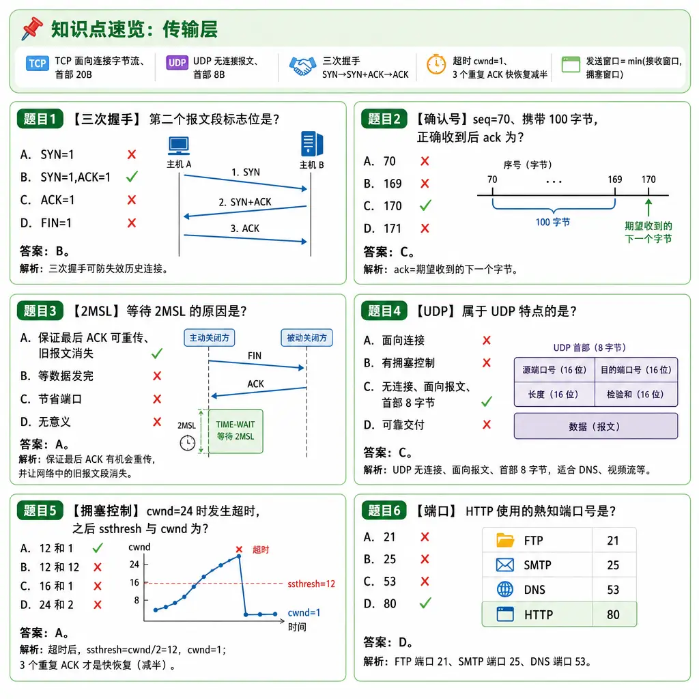
（考点归类供参考，具体题号以历年原卷为准）
第6章 应用层
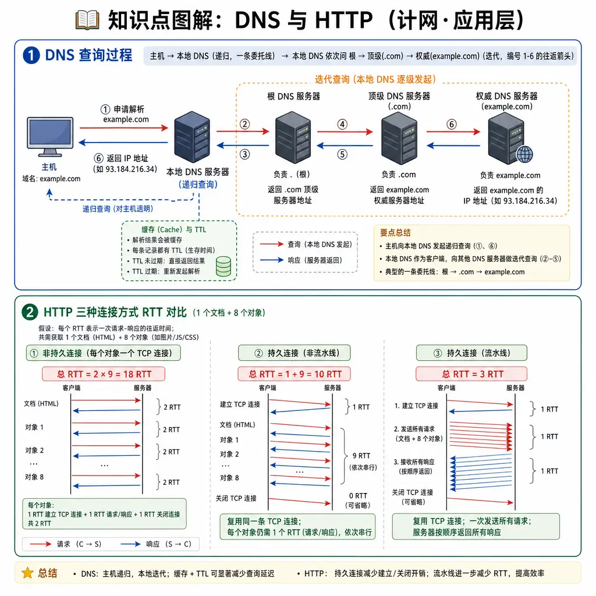
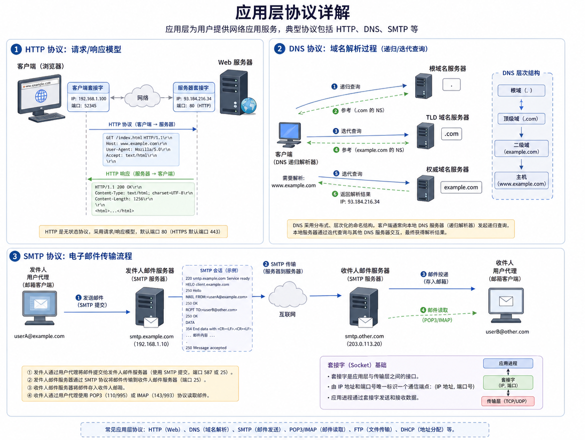
【分值占比】约 2~4 分
【考频】⭐⭐⭐（每年 1 题左右，近年几乎年年有选择题）
【必背】
- 应用层模型：C/S、P2P
- DNS：域名解析，递归查询与迭代查询
- FTP：控制连接21端口，数据连接20端口
- 电子邮件：SMTP发、POP3/IMAP收
- HTTP：无状态、持久/非持久连接
- URL格式
【核心概念】
6.1 DNS
域名结构（点分层次，从右到左级别升高）：
主机名 . 二级域 . 顶级域 . 根
例：www . example . com . （根通常省略点号不写）
最右边的点是根，向左依次为顶级域（com, org, cn 等）、二级域，最左边为主机名；级别越低的域名越靠左。
DNS服务器：根域名服务器、顶级域名服务器、权限域名服务器、本地域名服务器。
查询方式： - 递归查询：本地DNS代表客户端逐级查询，被询问者直接给最终结果 - 迭代查询：本地DNS依次向各服务器查询，被询问者只告知下一步该问谁
通常：主机→本地DNS用递归，本地DNS→其他用迭代。
资源记录（Resource Record）：每条记录为 (Name, Value, Type, TTL) 四元组，常见 Type：
| 类型 | 含义 | Name → Value |
|---|---|---|
| A | 主机地址记录 | 主机名 → IPv4 地址 |
| NS | 域名服务器记录 | 域 → 该域的权威 DNS 服务器主机名 |
| CNAME | 别名记录 | 别名 → 规范（真实）主机名 |
| MX | 邮件交换记录 | 域名 → 邮件服务器主机名（含优先级） |
高速缓存：DNS 服务器（尤其是本地 DNS）会缓存最近查询到的映射，并附 TTL 生存时间；缓存命中时可直接应答，减少查询延迟、减轻上级服务器负载与网络流量。TTL 过期后记录被删除，保证数据最终更新。
💡 技巧：考题常给「域名 → IP」问记录类型（A），给「域名 → 邮件服务器」选 MX，给「别名」选 CNAME；MX 记录还常考优先级数值越小优先级越高。
6.2 FTP
- 控制连接：端口21，整个会话期间保持，传送命令与应答
- 数据连接：端口20（主动模式），每次传输建立，传输完关闭
两种工作模式：
| 模式 | 协商命令 | 数据连接由谁发起 | 服务器数据端口 |
|---|---|---|---|
| 主动模式 | 客户端发送 PORT，告知自己监听的 IP 与端口 | 服务器主动连接客户端 | 20 |
| 被动模式 | 客户端发送 PASV，服务器回告一个临时端口 | 客户端主动连接服务器 | 服务器临时开启的端口 |
⚠️ 易错警示：主动模式下服务器从 20 端口「反过来」连客户端，常被客户端防火墙/NAT 拦截；被动模式由客户端发起数据连接，更易穿透防火墙，是目前浏览器等客户端的默认方式。无论哪种模式，控制连接（21）始终由客户端发起。
6.3 电子邮件
- SMTP：TCP端口25，推送邮件到服务器
- POP3：TCP端口110，拉取邮件，下载后删除
- IMAP：TCP端口143，拉取邮件，保留在服务器
6.4 HTTP
特点： - 无状态：服务器不记录客户端状态 - 使用Cookie维持状态
连接方式： - 非持久连接：每个对象一个TCP连接（HTTP/1.0） - 持久连接：一个TCP连接传输多个对象（HTTP/1.1），又分非流水线与流水线两种方式
请求时间估算（忽略发送与传输时延，只计 RTT）：
设页面含 1 个 HTML 基本文档和 n 个引用小对象。每个 TCP 连接建立需 1 个 RTT，「请求 + 响应」一个对象需 1 个 RTT。
| 方式 | 总时间 | 推导 |
|---|---|---|
| 非持久连接（串行） | $2(n+1)\,\text{RTT}$ | 每个对象都要新建 TCP 连接：$(1+1)\,\text{RTT}$ × (n+1) 个对象 |
| 持久连接、非流水线 | $(n+2)\,\text{RTT}$ | 1 RTT 建连 + (n+1) 个对象逐个请求，各 1 RTT |
| 持久连接、流水线 | $3\,\text{RTT}$（理想） | 1 RTT 建连 + 1 RTT 取基本文档 + 1 RTT 一次发完全部 n 个对象请求 |
【例】（HTTP 时间计算，难度★★）某网页包含 1 个 HTML 基本文档和 8 个引用对象，忽略发送时延，设每个 RTT 固定。比较三种方式取回整个页面所需的 RTT 数。
- 非持久连接：$2\times(8+1) = 18$ 个 RTT；
- 持久连接非流水线：$1 + 9 = 10$ 个 RTT；
- 持久连接流水线：$1 + 1 + 1 = 3$ 个 RTT。
⚠️ 易错警示：非持久连接中「每个对象 2 RTT」含 1 RTT 建连；持久连接只在开头建一次连接。若题目说明「支持并行 TCP 连接的非持久方式」，则总时间按并行度折算，不能套串行公式。
报文：请求报文、响应报文。
状态码： - 1xx：信息 - 2xx：成功（200 OK） - 3xx：重定向（301 Moved Permanently） - 4xx：客户端错误（404 Not Found） - 5xx：服务器错误
6.5 DHCP
动态主机配置协议（基于 UDP，客户端 68 端口、服务器 67 端口），主机接入网络时自动获取 IP 地址、子网掩码、默认网关与 DNS 服务器地址。
四步交互（均为广播，源地址 0.0.0.0，目的地址 255.255.255.255）：
| 步骤 | 报文 | 方向 | 作用 |
|---|---|---|---|
| 1 | DHCP DISCOVER | 客户端 → 广播 | 发现网络中的 DHCP 服务器 |
| 2 | DHCP OFFER | 服务器 → 客户端 | 提供可用的 IP 地址与配置参数 |
| 3 | DHCP REQUEST | 客户端 → 广播 | 请求租用某服务器提供的地址（同时告知其他服务器拒绝其提供） |
| 4 | DHCP ACK | 服务器 → 客户端 | 确认分配，租约生效 |
🔑 口诀：「发现（DISCOVER）—提供（OFFER）—请求（REQUEST）—确认（ACK）」，先找服务器，再挑地址。
【易错警示】
- ⚠️ DNS 查询报文用 UDP（端口 53），区域传送（主从服务器同步）用 TCP。
- ⚠️ FTP 控制连接在整个会话期间一直打开，数据连接按需建立、用完即关；主动/被动模式只影响数据连接由谁发起。
- ⚠️ HTTP 无状态，用 Cookie 实现状态保持。
- ⚠️ SMTP 只能传输 ASCII 文本，附件与非 ASCII 内容需 MIME 编码；SMTP 是「推」协议，用户收邮件用 POP3/IMAP「拉」。
- ⚠️ DHCP 四步报文都是广播（受限广播地址 255.255.255.255），因为此时客户端还没有 IP 地址。
【真题速查】
| 年份 | 题号 | 考点 |
|---|---|---|
| 2024 | 选择题 | HTTP 非持久连接与对象请求次数 |
| 2022 | 选择题 | DNS 递归查询与迭代查询过程 |
| 2020 | 选择题 | 电子邮件协议（SMTP/POP3/IMAP）分工 |
| 历年 | 选择题 | FTP 控制连接与数据连接 |
逐题真题：先阅读上方知识点，再按年份展开下列原题；每道题均已对应本章节知识点。
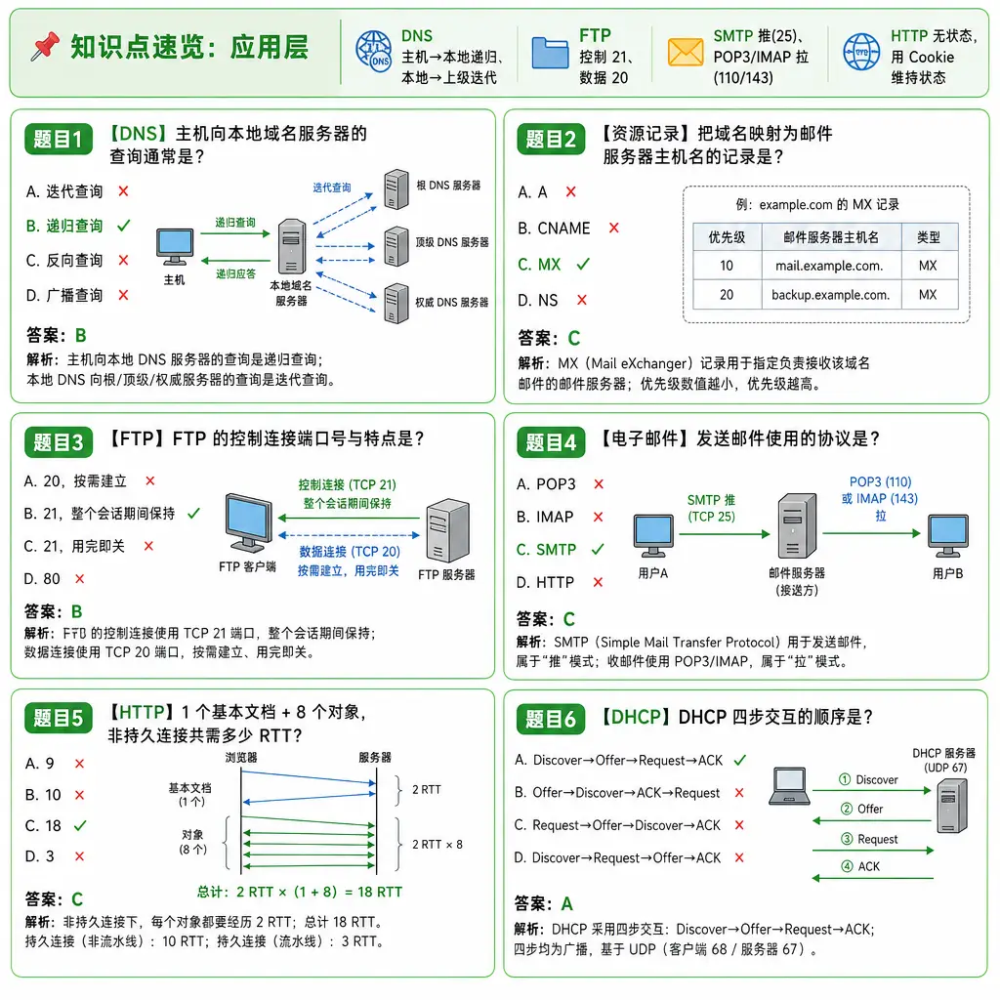
（考点归类供参考，具体题号以历年原卷为准）
计算机网络部分 完